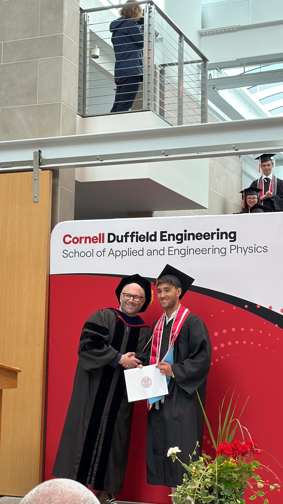
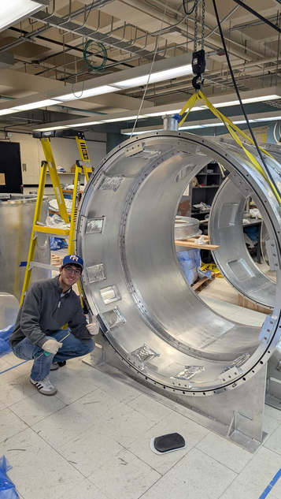
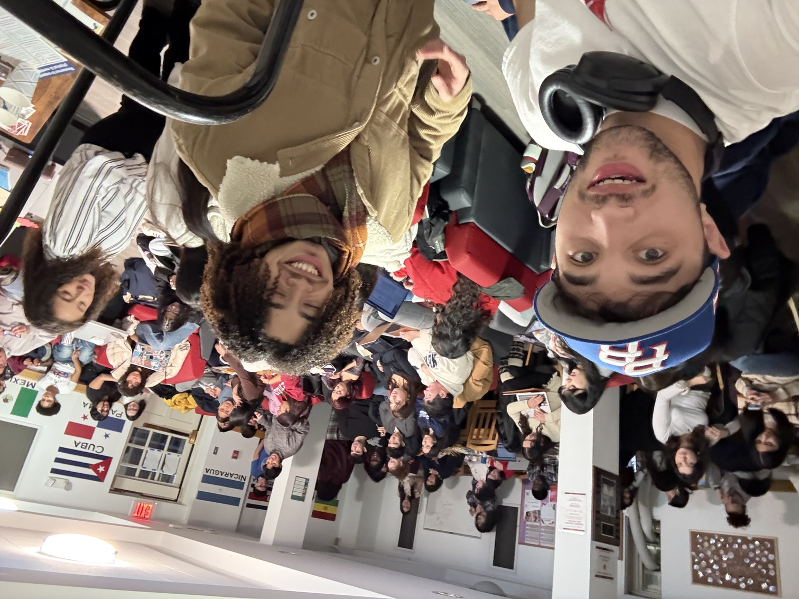
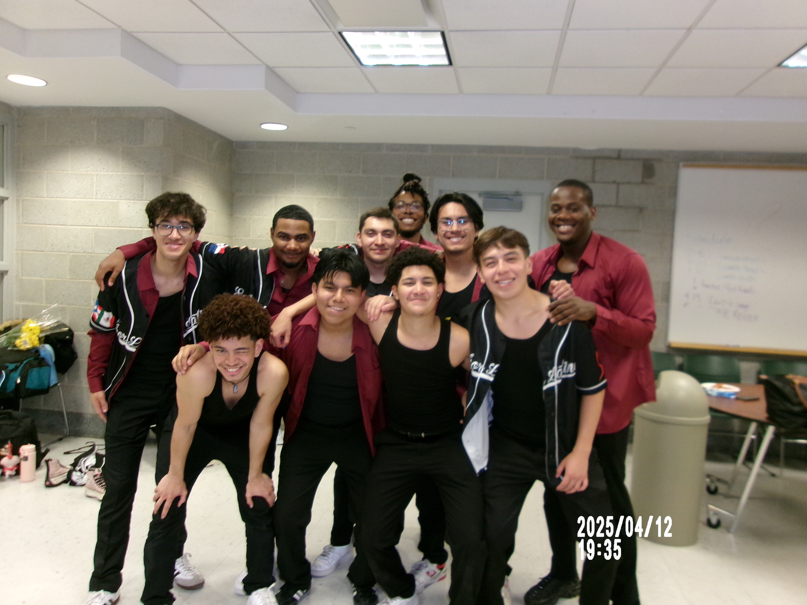

About Me

A bit about myself
Hi, my name is Nikolas, and I am originally from Miami, Florida. Growing up in Miami allowed me to see a diverse mix of cultures. This reflects my own family, which is a blend of Puerto Rican, Greek, and Mexican heritage.
In May 2026, I received my Bachelor of Science in Applied and Engineering Physics from Cornell University. Since first diving into middle school science, I have had an obsession with learning how the universe works. This curiosity spans from the intricacies of Quantum Mechanics to larger fields like General Relativity and Cosmology.
During my time at Cornell, I discovered a strong interest in applying my physics knowledge to solve mechanical and electrical problems. Working in Professor Niemack’s research group taught me a lot about the academic research environment and the PhD route. It also showed me the everyday need for engineers in all sorts of environments. I initially thought most of my work would require purely theoretical knowledge. I soon found myself using principles I already knew to design actual mechanical parts for the CCAT observatory.

Before starting my research work, I spent a few months during my first year at Cornell working as a dining hall worker. I learned how to balance a full class schedule and intense academic workload alongside picking up regular shifts. Most of my shifts involved cleaning up after other students. Occasionally I would be assigned to food stations where I made pizzas, salads, and other meals provided by the dining hall for my peers.
When I am not working on a difficult physics problem or a mechanical design, I love to play and listen to music. My favorite instruments to play are the bass, guitar, and piano. I also play the French horn, ukulele, and Puerto Rican cuatro. I have been practicing music since I was 11 years old.
Outside of my academic and research commitments, I was part of multiple social clubs. I served on the E-Board of the Puerto Rican Students Association (PRSA). We hosted events for Puerto Rican students and the broader Latino community at Cornell. Through PRSA, I volunteered to teach Spanish at a local preschool alongside other members. Being a part of this organization was a great way for me to take a break from the intensive workload of the Applied Physics major.


I also joined the Sabor Latino Ensemble, a Latin dance team mostly focused on Bachata, Merengue, and Salsa. We would also explore other Caribbean and Latin American dances. These clubs helped me branch out and meet people outside of the STEM bubble at Cornell.
Being a part of these organizations that had little to do with what I was studying taught me the importance of actively participating in the broader community I live in. This is something I hope to continue wherever I end up next as I start the next chapter of my life.